Anaesthetics became an elaborate technics in the latter part of the nineteenth century. Whereas the body’s self-anaesthetizing defenses are largely involuntary, these methods involved conscious, intentional manipulation of the synaesthetic system. To the already-existing Enlightenment narcotic forms of coffee, tobacco, tea, and spirits, there was added a vast arsenal of drugs and therapeutic practices, from opium, ether, and cocaine to hypnosis, hydrotherapy, and electric shock.
Anaesthetic techniques were prescribed by doctors against the disease of “neurasthenia,” identified in 1869 as a pathological construct.1 Striking in nineteenth-century descriptions of the effects of neurasthenia is the disintegration of the capacity for experience — precisely as in Benjamin’s account of shock. The dominant metaphors for the disease reflect this: “shattered” nerves, nervous “breakdown,” “going to pieces,” “fragmentation” of the psyche. The disorder was caused by “excess of stimulation” (sthenia), and the “incapacity to react to same” (asthenia). Neurasthenia could be brought about by “overwork,” the “wear and tear” of modern life, the physical trauma of a railroad accident, modern civilization’s “ever-growing tax upon the brain and its tributaries,” the “morbid ill effects attributed … to the prevalence of the factory system.”2
Remedies for neuraesthenia might include hot baths or a trip to the seashore, but the most common treatment was drugs. The “chief” of all drugs used for “nervous exhaustion” was opium, because of its twofold impact: “it excites and stimulates for a short time the brain-cells, and then leaves them in a state of tranquility, which is best adapted to their nutrition and repair.”3 Opiates were “the leading children’s drug throughout the nineteenth century.”4 Mothers working in factories drugged their children as a form of day-care. Anaesthetics were prescribed as sleeping aids for insomniacs and tranquilizers for the insane.5 Procurement of opiates was unregulated: patent medicines (nerve tonics and painkillers of every sort) were money-making, transnational commodities, traded and sold free of governmental control.6 Cocaine, first extracted from Peruvian coca in 1859 by the European Albert Niemann, became widely used by the end of the century.7 Hypodermic syringes were available for subcutaneous injections beginning in the 1860s.8
Late nineteenth-century advertisement for patent medicine.
The use of anaesthetics in medical surgery dates, not accidentally,9 from this same period of manipulative experimentation with the elements of the synaesthetic system. “Ether frolics,” the nineteenth-century version of glue sniffing, was a party game, in which “laughing gas” (nitrous oxide) was inhaled, producing “voluptuous sensations,” “dazzling visible impressions,” “a sense of tangible extension highly pleasurable in every limb,” “entrancing visions,” “a world of new sensations,” a new “universe composed of impressions, ideas, pleasures, and pain.”10
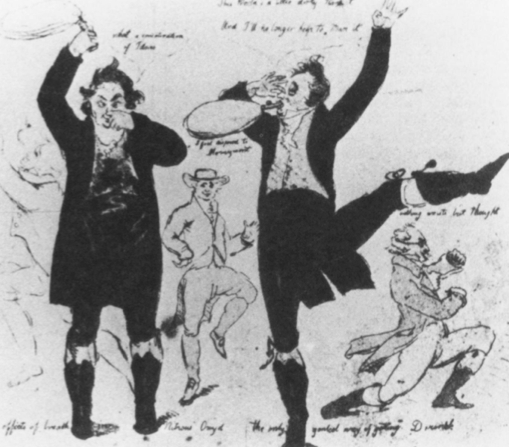
Caricature of nitrous oxide (ether) frolics. 1808.
It was not until mid-century that the practical implications for surgery were developed. It happened in the United States when, independently, medical students in Georgia and Massachusetts participated in these “frolics.” A Georgia surgeon, Crawford W. Long, noted that those bruised during the celebrations felt no pain. At a party in Massachusetts, medical students gave ether to rats in high enough doses to make them immobile, producing total insensibility. Crawford Long used anaesthetics successfully in operations in 1842. In 1844 a Hartford, Connecticut dentist performed tooth extractions with nitrous oxide. In 1846 — in a much more sober, legitimating atmosphere than the “ether frolics” — the first public demonstration of general anaesthesia was given at Massachusetts General Hospital,11 whence this “wonderful discovery”12 spread rapidly to Europe.
It was not uncommon in the nineteenth century for surgeons to become drug addicts.13 Freud’s self-experimentation with cocaine is well known. Elizabeth Barrett Browning was a morphinist from late youth. Samuel Coleridge began his life-long addiction at the age of twenty-four. Charles Baudelaire used opium. By mid-nineteenth century habitual drug-taking was “rampant among the poor,” and “spreading” among the “affluent, even among royalty.”14
Drug addiction is characteristic of modernity. It is the correlate and counterpart of shock. The social problem of drug addiction, however, is not the same as the (neuro)psychological problem, for a drug-free, unbuffered adaptation to shock can prove fatal.15 But the cognitive (hence, political) problem lies still elsewhere. The experience of intoxication is not limited to drug-induced, biochemical transformations. Beginning in the nineteenth century, a narcotic was made out of reality itself.
The keyword for this development is phantasmagoria. The term originated in England in 1802, as the name of an exhibition of optical illusions produced by magic lanterns. It describes an appearance of reality that tricks the senses through technical manipulation. And as new technologies multiplied in the nineteenth century, so did the potential for phantasmagoric effects.16
In the bourgeois interiors of the nineteenth century, furnishings provided a phantasmagoria of textures, tones, and sensual pleasure that immersed the home-dweller in a total environment, a privatized fantasy world that functioned as a protective shield for the senses and sensibilities of this new ruling class. In the Passagen-Werk, Benjamin documents the spread of phantasmagoric forms to public space: the Paris shopping arcades, where the rows of shop windows created a phantasmagoria of commodities on display; panoramas and dioramas that engulfed the viewer in a simulated total environment-in-miniature, and the World Fairs, which expanded this phantasmagoric principle to areas the size of small cities. These forms are the nineteenth-century precursors of today’s shopping malls, theme parks, and video arcades, as well as the totally controlled environments of airplanes (where one sits plugged into sight and sound and food service), the phenomenon of the “tourist bubble” (where the traveler’s “experiences” are all monitored and controlled in advance), the individualized audio-sensory environment of a “walkman,” the visual phantasmagoria of advertising, the tactile sensorium of a gymnasium full of Nautilus equipment.
Phantasmagorias are a technoaesthetics. The perceptions they provide are “real” enough — their impact upon the senses and nerves is still “natural” from a neurophysical point of view. But their social function is in each case compensatory. The goal is manipulation of the synaesthetic system by control of environmental stimuli. It has the effect of anaesthetizing the organism, not through numbing, but through flooding the senses. These simulated sensoria alter consciousness, much like a drug, but they do so through sensory distraction rather than chemical alteration, and — most significantly—their effects are experienced collectively rather than individually. Everyone sees the same altered world, experiences the same total environment. As a result, unlike with drugs, the phantasmagoria assumes the position of objective fact. Whereas drug addicts confront a society that challenges the reality of their altered perception, the intoxication of phantasmagoria itself becomes the social norm. Sensory addiction to a compensatory reality becomes a means of social control.
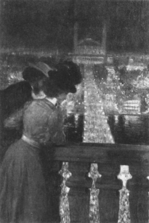
Franz Skarbina. View of the Seine and Paris at Night. 1901.
The role of “art” in this development is ambivalent because, under these conditions, the definition of “art” as a sensual experience that distinguishes itself precisely by its separation from “reality” becomes difficult to sustain. Much of “art” enters into the phantasmagoric field as entertainment, as part of the commodity world. The effects of phantasmagoria exist on multiple levels, as is visible in a turn-of-the-century painting by Franz Skarbina.17 The view is of the World Fair in Paris in 1901, depicted in the doubly illusory form provided by lighting at night. The painting is a Stimmungsbild, a “mood-painting,” genre, then in fashion, that aimed at depicting an atmosphere or “mood” more than a subject. Despite the depth of the view, visual pleasure is provided by the luminous surface of the painting that shimmers over the scene like a veil. John Czaplicka writes: The city is “reduced to a mood of the beholder … The experience of place … is more emotional than rational … There is subtle denial of the city as artifice… and a subtle relinquishing of humanity’s responsibility for having made this environment.”18
Benjamin describes the flaneur as self-trained in this capacity of distancing oneself by turning reality into a phantasmagoria: rather than being caught up in the crowd, he slows his pace and observes it, making a pattern out of its surface. He sees the crowd as a reflection of his dream mood, an “intoxication” for his senses.
The sense of sight was privileged in this phantasmagoric sensorium of modernity. But sight was not exclusively affected. Perfumeries burgeoned in the nineteenth century, their products overpowering the olfactory sense of a population already besieged by the smells of the city.19 Zola’s novel Le Bonheur des Dames describes the phantasmagoria of the department store as an orgy of tactile eroticism, where women felt their way by touch through the rows of counters heaped with textiles and clothing. In regard to taste, Parisian gustatory refinements had already reached an exquisite level in post-Revolutionary France, as former cooks for the nobility sought restaurant employment. It is significant for the anaesthetic effects of these experiences that the singling out of any one sense for intense stimulus has the effect of numbing the rest.20
The most monumental artistic attempt to create a total environment was Richard Wagner’s design for music drama as a Gesammtkunstwerk (total artwork), in which poetry, music, and theater were combined in order to create, as Adorno writes, an “intoxicating brew” (surmounting the uneven development of the senses and reuniting them).21 Wagnerian music drama floods the senses and fuses them as a “consoling phantasmagoria,” in a “permanent invitation to intoxication, as a form of oceanic regression.”22 It is the “perfection of the illusion that the work of art is reality sui generis.”23 “Like Nietzsche and subsequently Art Nouveau, which he anticipates in many respects,[Wagner] would like single-handed to will an aesthetic totality into being, casting a magic spell and with defiant unconcern about the absence of the social conditions necessary for its survival.”24 It is this pseudo-totalization that, for Adorno, makes Wagnerian opera a phantasmagoria. Its unity is superimposed. Whereas, “under conditions of modernity,” in the “contingent experience of the individual” outside the opera house, “the separate senses do not unite” into a unified perception, here “disparate procedures are simply aggregated in such a way as to make them appear collectively binding.”25 In lieu of internal musical logic, the Wagnerian opera evokes a surface “unity of style,” one that overwhelms by not pausing for breath.26 Unity is mere duplication, which “substitutes for protest”;27 “the music repeats what the words have already said”; the musical motifs recur like an advertising theme; intoxication, the ecstasy that might have affirmed sensuality, is reduced to surface sensation, while the content of the dramas is life’s negation: “the action culminates in the decision to die.”28
Gesamtkunstwerk, related to the disenchantment of Wagner’s “intimately the world,”29 is an attempt to produce a totalizing metaphysics instrumentally, by means of every technological means at its disposal. This is true of dramatic representation as well as musical style. At Bayreuth the orchestra — the means of production of the musical effects — is hidden from the public by constructing the pit below the audience’s line of vision. Supposedly “integrating the individual arts,” the performance of Wagner’s operas “ends up by achieving a division of labor unprecedented in the history of music.”30
Marx made the term phantasmagoria famous, using it to describe the world of commodities that, in their mere visible presence, conceal every trace of the labor that produced them. They veil the production process, and — like mood pictures — encourage their beholders to identify them with subjective fantasies and dreams. Adorno comments on Marx’s theory of commodities that their phantasmagoria “mirrors subjectivity by confronting the subject with the product of its own labor, but in such a way that the labor that has gone into it is no longer identifiable”; rather, “the dreamer encounters his [her] own image impotently.”31 Adorno argues that the deceptive illusion of Wagner’s art is analogous.32
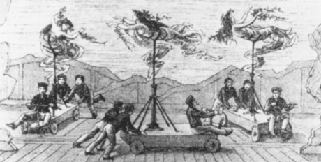
The swimming machines (for Das Rheingold) in action
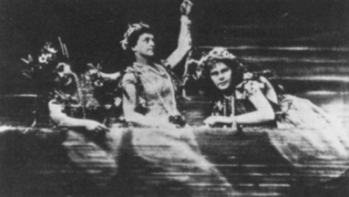
as seen by the audience
The task of his music is to hide the alienation and fragmentation, the loneliness and the sensual impoverishment of modern existence that was the material out of which it is composed: “the task of [Wagner’s] music is to warm up the alienated and reified relations of man and make them sound as if they were still human.”33 “Wagner himself speaks of “healing up the wounds with which the anatomical scalpel has gashed the body of speech.”34
The factory was the work-world counterpart of the opera house — a kind of counter-phantasmagoria that was based on the principle of fragmentation rather than the illusion of wholeness. Marx’s Capital (written in the 1860s and thus a part of the same era as Wagner’s operas) describes the factory as a total environment:
Every organ of sense is injured in an equal degree by artificial elevation of temperature, by the dust-laden atmosphere, by the deafening noise, not to mention danger to life and limb among the thickly crowded machinery, which, with the regularity of the seasons, issues its list of the killed and the wounded in the industrial battle.35
We have learned from recent writing on social history that doctors were “uniformly horrified by the grisly body count of the industrial revolution.”36 The rates of injuries due to factory and railroad accidents in the nineteenth century made surgical wards look like field hospitals. At Massachusetts General Hospital in mid-century (after introduction of general anaesthetics), nearly seven percent of all admitted received amputations.37 As most hospital patients were charity cases, this group was largely from the lower class.38 Threatened bodies, shattered limbs, physical catastrophe — these realities of modernity were the underside of the technical aesthetics of phantasmagorias as total environments of bodily comfort. The surgeon whose task it was, literally, to piece together the casualties of industrialism achieved a new social prominence. The medical practice was professionalized in the mid-nineteenth century,39 and doctors became prototypical of a new elite of technical experts.
Anaesthesia was central to this development. For it was not only the patient who was relieved from pain by anaesthesia. The effect was as profound upon the surgeon. A deliberate effort to desensitize oneself from the experience of the pain of another was no longer necessary. Whereas surgeons earlier had to train themselves to repress empathic identification with the suffering patient, now they had only to confront an inert, insensate mass that they could tinker with without emotional involvement.
These developments entailed a cultural transformation of medicine — and of the discourse of the body generally — as is exemplified clearly in the case of limb amputations. In 1639, the British naval surgeon John Woodall advised prayer before the “lamentable” surgery of amputation: “For it is no small presumption to Dismember the Image of God.”40 In 1806, the era of Charles Bell, the surgeon’s attitude evoked Enlightenment themes of Stoicism, the glorification of reason, and the sanctity of individual life. But with the introduction of general anaesthesia, the American Journal of Medical Sciences could report in 1852 that it was “very gratifying to the operator and to the spectators that the patient lies a tranquil, passive subject, instead of struggling and perhaps uttering piteous cries and moans, while the knife is at work.”41 The control provided to the surgeon by a “tranquilly pliant” patient allowed the operation to proceed with unprecedented technical thoroughness and “convenient deliberation.”42 Of course, the point is in no way to criticize surgical advances. Rather, it is to document a transformation in perception, the implications of which far surpassed the scene of the surgical operation.
Phenomenology uses the term “hyle,” undifferentiated, “brute matter — to describe that which is perceived but not “intended.” Husserl’s example is Dürer’s engraving on wood of the knight on horseback. Although the wood is perceived along with the knight’s image, it is not the meaning of the perception. If you are asked, what do you see? you will say, a knight (the surface image), not a piece of wood. The material stuff disappears behind the intent, or meaning of the image.43 Husserl, the founder of modern phenomenology, was writing at the turn of the century, the era when professionalization, technical expertise, division of labor, and the rationalization of procedures were transforming social practices. Urban-industrial populations began to be perceived as themselves a “mass” — undifferentiated, potentially dangerous, a collective body that needed to be controlled and shaped into a meaningful form. In one sense, this was a continuation of the autotelic myth of creation ex nihilo, wherein “man” transforms material nature by shaping it to his will. New were the theme of the social collectivity and the division of labor to which the creative process now submitted.
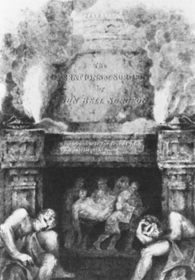
Frontispiece for Sir Charles Bell, The Principles of Surgery, 1806: “Who would lose for fear of pain this intellectual being?”
For Kant, the domination of nature was internalized: the subjective will, the disciplined, material body, and the autonomous self that was produced as a result, were all within the (same) individual. In early-modern autogenesis the autonomous subject produced himself. But by the end of the nineteenth century, these functions were divided: the “self-made man” was entrepreneur of a large corporation; the “warrior” was general of a technologically sophisticated war machine; the ruling prince was head of an expanding bureaucracy; even the social revolutionary had become the leader and shaper of a disciplined, mass-party organization.
Technology affected the social imaginary. The new theories of Herbert Spencer and Emile Durkheim perceived society as an organism, literally a “body” politic, in which the social practices of institutions (rather than, as in premodern Europe, the social ranks of individuals) performed the various organ functions.44 Labor specialization, rationalization, and integration of social functions created a techno-body of society, and it was imagined to be as insensate to pain as the individual body under general anaesthetics, so that any number of operations could be performed on the social body without needing to concern oneself lest the patient — society itself — “utter piteous cries and moans.” What happened to perception under these circumstances was a tripartite splitting of experience into agency (the operating surgeon), the object as hyle (the docile body of the patient), and the observer (who perceives and acknowledges the accomplished result). These were positional differences, not ontological ones, and they changed the nature of social representation. Listen to Husserl’s description of experience, in which this tripartite division is evident even in one individual, the philosopher himself. Husserl writes in Ideen II:
If I cut my finger with a knife, then a physical body is split by the driving into it a wedge, the fluid contained in it trickles out, etc. Likewise, the physical thing, “my Body,” is heated or cooled through contact with hot or cold bodies; it can become electrically charged through contact with an electric current; it assumes different colors under changing illumination: and one can elicit noises from it by striking it.45
This separation of the elements of synaesthetic experience would have been inconceivable in a text by Kant. Husserl’s description is a technical observation, in which the bodily experience is split from the cognitive one, and the experience of agency is, again, split from both of these. An uncanny sense of self-alienation results from such perceptual splitting. Something similar happened at this time in the operating room. The Enlightenment practice of performing surgical procedures in an amphitheater (whose grandeur rivaled the Wagnerian stage) went through a radical alteration with the introduction of general anaesthetics.
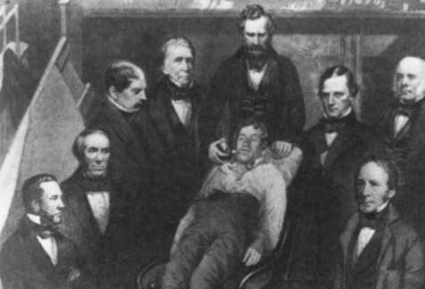
William T. Morton administering anaesthesia at the Massachusetts General Hospital, October 16, 1846.
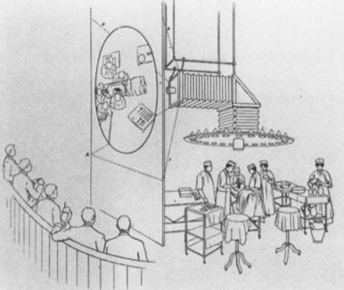
Diagram of an operating theater, circa 1890.
The initial impact was to heighten the theatrical effect, as (we have already noted) neither surgeon nor audience had to bother with the feelings of the insensate patient. Here is a description of an early amputation under general anaesthesia:
The Catlin, glittering for a moment above the head of the operator was plunged through the limb and with one artistic sweep made the flaps or completed a circular amputation. After several aerial gyrations the saw severed the bone as if driven by electricity. The fall of the amputated part was greeted with tumultuous applause by the excited students. The operator acknowledged the compliment with a formal bow.46
A radical alteration occurred at the end of the century, when discoveries in germ theory and antiseptics transformed the operating room from theatrical stage into a tile-and-marble, scrubbed down, sterilized environment. At the Tenth International Medical Congress in 1890, J. Baladin of St. Petersburg described the first use of the glass partition to separate students and visitors from the operating arena.47 The glass window became a projection screen: a series of mirrors provided an informative image of the procedure. Here the tripartite division of perceptual perspective — agent, matter, and observer — paralleled the brand new, contemporary experience of the cinema. In the Artwork essay, Walter Benjamin discusses the surgeon and cameraman, as opposed to the magician and painter. The operations of both surgeon and cameraman are nonauratic; they “penetrate” the human being; in contrast, the magician and painter confront the other person intersubjectively, as Benjamin writes, “man to man.”48
The German writer Ernst Jünger, several times wounded in World War I, wrote afterwards that “sacrifices” to technological destruction — not only with war casualties but industrial and traffic accidents as well — now occurred with statistical predictable.49 They had become accepted as a self-understood feature of existence thereby causing the “Worker,” as the new modern “type,” to develop a “Second Consciousness”: “This Second and colder Consciousness is indicated in the ever-more sharply developed capacity to see oneself as an object.50 Whereas the “self-reflection” characteristic of psychology of the “old style” took as its subject matter “the sensitive human being,” this Second Consciousness “is directed at a being who stands outside the zone of pain.”51 Jünger connects this changed perspective with photography, the “artificial eye” that “arrests the bullet in flight just as it does the human being at the instant of being torn to pieces by an explosion.”52 The powerfully prosthetic sense organs of technology are the new “ego” of a transformed synaesthetic system. Now they provide the porous surface between inner and outer, both perceptual organ and mechanism of defense. Technology as a tool and a weapon extends human power — at the same time intensifying the vulnerability of what Benjamin called “the tiny, fragile human body”53 — and thereby produces a counter-need, to use technology as a protective shield against the “colder order” that it creates. Jünger writes that military uniforms have always had a protective “character of defense,” but now, “technology is our uniform:”
It is the technological order itself, that great mirror in which the growing objectifications of our life appear most clearly, and which is sealed against the clutch of pain in a special way … We, however, stand far too deeply in the process to view this … This is all the more the case, as the comfort-character [read: phantasmagoric function] of our technology merges ever more unequivocably with its characteristic of instrumental power.54
In the “great mirror” of technology, the image that returns is displaced, reflected onto a different plane, where one sees oneself as a physical body divorced from sensory vulnerability — a statistical body, the behavior of which can be calculated; a performing body, actions of which can be measured up against the norm; a virtual body, one that can endure the shocks of modernity without pain. As Jünger writes: “It almost seems as if the human being possessed a striving to create a space in which pain … can be regarded as an illusion.”55
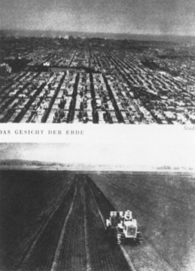
From Ernst Jünger, The Transformed World, 1933: “The face of the earth — city, country.”
We have seen that Adorno identified Art Nouveau as a continuation of Wagner’s commodity-like phantasmagoria. Again, surface unity provided the phantasmagoric effect. Just before the war, this movement denied the experience of fragmentation by representing the body as an ornamental surface, as if reflected off the inside of technology’s protective shield. The outbreak of war made such denial no longer possible. The Berlin Dada Manifesto of 1918 announced: “The highest art will be the one which in its conscious content presents the thousand-fold problems of the day, the art which has been visibly shattered by the explosions of last week, which is forever trying to collect its limbs after yesterday’s crash.”56 It is possible to read the portraits of Expressionist artists as bearing on the surface of the face, unarmored and exposed, the material impress of this technological shattering. (This is totally opposed to the fascist interpretation of Expressionism as degenerate art, which ontologizes the surface appearance, and reduces history to biology.) The vigorous postwar movement of photomontage also made the fragmented body its stuff and substance. But the effect was to piece the fragments together again in images that appear impervious to pain. For example, in Hannah Höch’s 1926 montage Monument II: Vanity, the image is unified with precision, creating a coherent (if disturbing) surface — yet without the superimposed unity of the phantasmagoric.
At the same time, surface pattern, as an abstract representation of reason, coherence, and order, became the dominant form of depicting the social body that technology had created — and that in fact could not be perceived otherwise. In 1933 Jünger wrote the introduction to a book of photographs, in which German cities and fields form a surface design of abstract orderliness that is the hallmark of instrumental technology. The same aesthetics is visible in the Soviet “plan”; its organization chart of 1924 shows the entire society from the perspective of centralized power in terms of productive units, from steel to matchsticks.
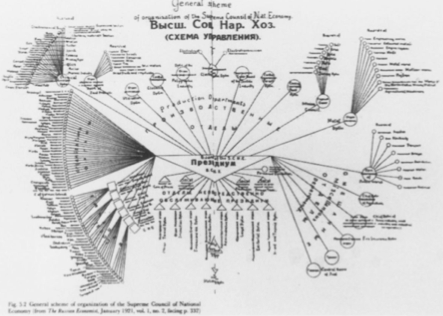
Soviet organization plan, 1921.
The aesthetics of the surface in these images gives back to the observer a reassuring perception of the rationality of the whole of the social body, which when viewed from his or her own particular body is perceived as a threat to wholeness. And yet, if the individual does find a point of view from which it can see itself as a whole, the social techno-body disappears from view. In fascism (and this is key to fascist aesthetics), this dilemma of perception is surmounted by a phantasmagoria of the individual as part of a crowd that itself forms an integral whole –– a “mass ornament” to borrow Siegfried Kracauser’s term — that pleases as an aesthetics of the surface, a de-individualized, formal, and regular pattern, much like the Soviet plan. The Urform of this aesthetics is already present in Wagner’s operas in the staging of the chorus, which anticipates the crowd’s salute to Hitler. But lest we forget that fascism is not itself responsible for the transformed perception, musical productions of the 1930s used this same design motif (Hitler was an aficionado of American musicals).
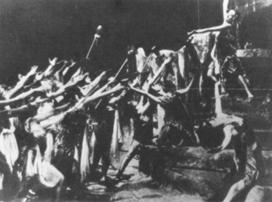
Performance of Wagner in Bayreuth in 1930.
Hitler in the Reichstag.
We are — by way of a long detour — back to Benjamin’s concerns at the end of the Artwork essay: the crisis in cognitive experience caused by the alienation of the senses that makes it possible for humanity to view its own destruction with enjoyment. Recall that this essay was first published in 1936. That same year Jacques Lacan traveled to the Marienbad to deliver a paper to the International Psychoanalytic Association that first formulated his theory of the “mirror stage.” It described the moment when the infant of six to eighteen months triumphantly recognizes its mirror image and identifies with it as an imaginary bodily unity. This narcissistic experience of the self as a spectacular “reflection” is one of mis(re)cognition. The subject identifies with the image as the “form” (Gestalt) of the ego, in a way that conceals its own lack. It leads, retroactively to a fantasy of the “body-in-pieces” (corps morcele). Hal Foster has situated this theory in the historical context of early fascism, and pointed out the personal connections between Lacan and Surrealist artists who made the fragmented body their theme. I believe one can push the significance of this contextualization very far, so that the mirror stage can be read as a theory of fascism.
The experience Lacan describes may be a universal stage in developmental psychology, but its importance psychoanalytically comes only after-the-fact, as deferred action (Nachträglichkeit), when the recollection of this infant fantasy is triggered in the memory of the adult by something in his or her present situation. Thus the significance of Lacan’s theory emerges only in the historical context of modernity as precisely the experience of the fragile body and the dangers to it of fragmentation that replicates the trauma of the original infantile event (the fantasy of the corps morcelé). Lacan himself recognized the historical specificity of narcissistic disorders, commenting that Freud’s major paper on narcissism, not accidentally, “dates from the beginning of the 1914 war, and it is quite moving to think that it was at that time that Freud was developing such a construction.”57
The day after Lacan delivered his paper in Marienbad, he deserted the Congress and took the train to Berlin in order to watch the Olympic Games. In a note to the Artwork essay, Benjamin commented on these modern Olympics, which, he said, differed from their ancient prototypes inasmuch as they were less a contest than a proceeding of exact, technological measurement, a form of test rather than competition.58 Drawing on Jünger, Foster points out that fascism displayed the physical body as a kind of armor against fragmentation, and also against pain. The armored mechanized body with its galvanizing surface and metallic, sharp-angled face provides the illusion of invulnerability. It is the body viewed from the point of view of the “second consciousness” described by Jünger as “numbed” against feeling. (The word narcissism shares a root with the word narcotic!) But if fascism thrived on the representation of the body-as-armor, it was not its only aesthetic form relevant to this problematic.
There are two self-definitions of fascism that, in closing, I would like to consider. The first comes from Joseph Goebbels, in a letter of 1933: “We who shape modern German politics feel ourselves to be artistic people, entrusted with the great responsibility of forming out of the raw material of the masses a solid, well-wrought structure of a Volk.”59 This is the technologized version of the myth of autogenesis, with its division between the agent (here, the fascist leaders) and the mass (the undifferentiated hyle, acted upon). We will remember that this division is tripartite. There is as well the observer, who “knows” through observation. It was the genius of fascist propaganda to give to the masses a double role, to be observer as well as the inert mass being formed and shaped. And yet, due to a displacement of the place of pain, due to a consequent mis(re)cognition, the mass-as-audience remains somehow undisturbed by the spectacle of its own manipulation — much like Husserl cutting open his finger. In Leni Riefenstahl’s 1935 film, Triumph of the Will (of which Benjamin, writing his Artwork essay, was surely aware), the mobilized masses fill the grounds of the Nuremberg stadium and the cinema screen so that the surface patterns provide a pleasing design of the whole, letting the viewer forget the purpose of the display, the militarization of society for the teleology of making war. The aesthetics allows for an anaesthetization of reception, a viewing of the “scene” with disinterested pleasure, even when that scene is the preparation through ritual of a whole society for unquestioning sacrifice and ultimately destruction, murder, and death.
In Triumph of the Will Rudolf Hess shouts to the crowd in the arena: “Germany is Hitler, and Hitler is Germany!” So we come to the second self-definition of fascism. The intentional meaning is that Hitler embodies the entire power of the German nation. But if we turn the camera on Hitler in a nonauratic manner, that is, if we use this technological apparatus as an aid to sensory comprehension of the external world rather than as a phantasmagoric, or narcissistic, escape from it, we see something very different.
We know that in 1932, under the direction of the opera singer Paul Devrient, Hitler practiced his facial expressions in front of a mirror in order to have what he believed was the proper effect. There is reason to believe that this effect was not expressive, but reflective, giving back to the man-in-the-crowd his own image — the narcissistic image of the intact ego, constructed against the fear of the body-in-pieces.
In 1872, Charles Darwin published The Expression of the Emotions in Man and Animals, expressing his own indebtedness to the work of Charles Bell. Darwin’s book was the first of its kind to make use of photographs rather than drawings, which allowed a greater precision of analysis of the facial expressions of human emotions. If one compares photographs of Hitler’s facial expressions as he practices in front of a mirror with the photographs in Darwin’s book, one might expect to find that his expressions connote aggressive emotions — anger and rage. Or, one might presume that Hitler should have tried to project the impervious, “armored” face that Jünger describes, so typical in Nazi art. But in fact the two emotions described by Darwin that match Hitler’s photographs are quite different from both of these. The first is fear. Listen to Darwin’s description:
As fear increases into an agony of terror … the wings of the nostrils are widely dilated … there is a gasping and convulsive motion of the lips, a tremor of the hollow cheek … eyes are fixed on the object of terror … the muscles of the body may become rigid … hands are alternately clenched and opened … [t]he arms may be protruded, as if to avert some dreadful danger, or may be thrown wildly over the head.60
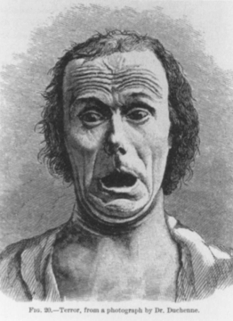
From Charles Darwin, The Expression of Emotion in Man and Animals, 1872.
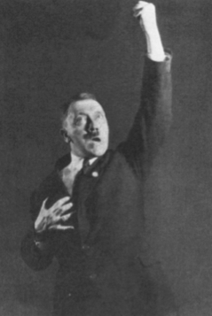
Heinrich Hoffman, Hitler Oratorical Pose, 1932.
There is a second emotion identifiable in Hitler’s gestures. It is what Darwin calls “suffering of the mind and body: weeping,” and the relevant photographs are, specifically, the faces of screaming and weeping infants. Darwin writes:
The raising of the upper lip draws upward the flesh of the upper parts of the cheeks and produces a strongly-marked fold on each cheek — the naso-labial fold — which runs from near the wings of the nostrils to the corners of the mouth and below them. This fold or furrow may be seen in all the photographs, and it is very characteristic of the expression of a crying child.61
From Charles Darwin, The Expression of Emotion in Man and Animals, 1872.
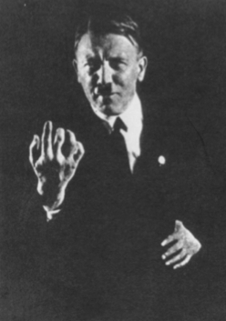
Heinrich Hoffman, Hitler Oratorical Pose, 1932.
The camera can aid us in knowledge of fascism, because it provides an “aesthetic” experience that is nonauratic, critically “testing,” capturing with its “unconscious optics”62 precisely the dynamics of narcissism on which the politics of fascism depends, but which its own auratic aesthetic conceals. Such knowledge is not historicist. The juxtaposition of photographs of Hitler’s face and Darwin’s illustrative examples will not answer the complexities of von Ranke’s question of “how it actually was” in Germany, or what determined the uniqueness of its history. Rather, the juxtaposition creates a synthetic experience that resonates with our own time, providing us, today, with a double recognition — first, of our own infancy, in which, for so many of us, the face of Hitler appeared as evil incarnate, the bogeyman of our own childhood fears. Second, it shocks us into awareness that the narcissism that we have developed as adults, that functions as an anaesthetizing tactic against the shock of modern experience — and that is appealed to daily by the image-phantasmagoria of mass culture — is the ground from which fascism can again push forth. To cite Benjamin: “In shutting out the experience [of the inhospitable, blinding age of big-scale industrialism], the eye perceives an experience of a complementary nature, in the form of its spontaneous after-image.”63 Fascism is that afterimage. In its reflecting mirror we recognize ourselves.
The term “neurasthenia” was publicized by the New York doctor George Miller Beard. By the 1880s, it had taken a prominent place in European discussions. Beard himself suffered from nervous debilitation, and gave himself electrotherapy (shocks) to “replenish exhausted supplies of nerve force” (Janet Oppenheim, Shattered Nerves: Doctors, Patients, and Depression in Victorian England [New York: Oxford University Press, 1991], p. 120). ↩
Cited in Oppenheim, Shattered Nerves, pp. 44, 87, 95, 96, 101, 105. ↩
Thomas Dowes (1880s), cited in Oppenheim, pp. 114-15. ↩
Oppenheim, Shattered Nerves, p. 113. ↩
Martin S. Pernick, A Calculus of Suffering: Pain, Professionalism, and Anaesthesia in Nineteenth-Century America (New York: Columbia University Press, 1985) p. 83. ↩
Controls (e.g., England’s Pharmacy and Poison Act of 1908) were not passed until the twentieth century. ↩
Owen H. Wangensteen and Sarah D. Wangensteen, The Rise of Surgery: From Empiric Craft to Scientific Discipline (Minneapolis: University of Minnesota Press, 1978). ↩
Oppenheim, Shattered Nerves, p. 114. ↩
I have not found reference to Charles Bell’s practice during surgery, but his French counterpart, Larry, surgeon for Napoleon’s army, froze the limbs to be amputated with ice, or knocked the patient unconscious. Larry was willing to experiment with nitrous oxide, which was known in his time, but the suggestion was considered by the majority of the French Royal Academy to border on the criminal (Frederick Prescott, the Control of Pain [London: The English Universities Press, 1964], pp. 18-28). ↩
Effects of nitrous oxide reported in Prescott, p. 19. ↩
See Wangensteen and Wangensteen, pp. 277-79. ↩
Prescott, p. 28. Acceptance of anaesthetics was not without resistance. Cultural encoding of the meaning of pain included a strong tradition that held pain was “natural” or God-intended (especially in childbirth), and beneficial to healing. Resistance to the insensibility of general anaesthetics was also political. Elizabeth Cady Stanton “objected to a woman’s surrendering her consciousness and body to a male doctor” (Pernick, pp. 16-61). “Long after 1846, alcoholic stupor remained an acceptable surgical anodyne” (ibid., p. 178). ↩
Wangensteen and Wangensteen, Rise of Surgery, p. 293. ↩
Oppenheim, Shattered Nerves, p. 113. ↩
See Hans Selye, The Stress of Life, 2nd ed., rev. (New York: McGraw-Hill, 1976), p. 307. In an article published the same year as Benjamin’s Artwork essay (1936), Selye first defined “Stress Syndrome” as a “Disease of Adaptation,” that is, an inability of the organism to meet a (nonspecific) demand made on it with adequate adaptive reactions. Stress was “the common denominator of all adaptive reactions in the body. “It went through three phases if the external demand continued unabated: alarm reaction (general resistance to the demand), adaptation (an attempt, successful in the short-run, to coexist), and finally, exhaustion, resulting in passivity (lack of resistance, and possibly death). ↩
Technology thus develops with a double function. On the one hand, it extends the human senses, increasing the acuity of perception, and forces the universe to open itself up to penetration by the human sensory apparatus. On the other hand, precisely because this technological extension leaves the senses open to exposure, technology doubles back on the senses as protection in the form of illusion, taking over the role of the ego in order to provide defensive insulation. The development of the machine as tool has its correlation in the development of the machine as armor (see below). It follows that the synaesthetic system is not a constant in history. It extends its scope, and it is through technology that this extension occurs. ↩
See John Czaplicka’s discussion of this painting in “Pictures of a City at Work, Berlin, circa 1890-1930: Visual Reflections on Social Structures and Technology in the Modern Urban Construct,” Berlin: Culture and Metropolis eds. Charles W. Haxthausen and Heidrun Suhr (Minneapolis: University of Minnesota Press, 1990), pp. 12-16. I am grateful to the author for pointing out the relevance of the for the discussion at hand. ↩
Ibid., p. 15 ↩
See Benjamin: “The recognition of a scent … deeply drugs the sense of time” (Baudelaire, p. 143). ↩
See Marshall McLuhan, Understanding Media: The Extensions of Man (New York: McGraw-Hill, 1964), p. 53. The specialization of these stimulants causes an uneven development of the senses. They are transformed within industrial societies at different rates. ↩
Theodor Adorno, In Search of Wagner, trans. Rodney Livingstone (London: NLB, 1981), p. 100. ↩
Ibid., pp. 87, 100. ↩
Ibid., p. 85. ↩
Ibid., p. 101. ↩
Ibid., p. 102. ↩
Ibid. ↩
Ibid., p. 112. ↩
Ibid., pp. 102-3. ↩
Ibid., p. 107. ↩
Ibid., p. 109. Adorno cites “evidence from Wagner’s immediate circle.” ↩
Ibid., p. 91. ↩
Wagner’s oeuvre resembled “the consumer goods of the nineteenth century which knew no greater ambition than to conceal every sign of the work that went into them, perhaps because any such traces reminded people too vehemently of the appropriation of the labor of others, of an injustice that could still be felt” (ibid., p. 83). ↩
Ibid., p. 100. ↩
Cited in ibid., p. 89. In this context we can understand Benjamin’s praise of Baudelaire (a contemporary of both Wagner and Marx), for confronting modern shock head-on, and for being able to record in his poetry precisely the fragmented and jarring, even painful sensuality of modern experience in a way that pierces through the phantasmagoric veil. ↩
Marx, Capital, vol. 1, ch. 15, section 4. ↩
Pernick, A Calculus of Suffering, p. 218. ↩
Ibid., p. 211. ↩
Until the discovery of the importance of antiseptics, upper-class operations were performed at home, anaesthesia being administered with a “bottle and a rag” (ibid., p. 223). ↩
The American Medical Association was established in mid-century. Prior to this, there was no regulation as to who was authorized to perform surgery. ↩
Cited in Wangensteen and Wangensteen, The Rise of Surgery, p. 181. ↩
Cited in Pernick, A Calculus of Suffering, p 83. ↩
Cited in ibid., p. 83. ↩
I discuss the connection between Husserl’s conception and early cinema in Anthony Vidler, ed., Territorial Myths (Princeton: Princeton University Press, 1992). ↩
Spencer wrote in 1851: “We commonly enough compare a nation to a living organism. We speak of the ‘body politic,’ of the function of its several parts, of its growth, and of its diseases, as though it were a creature.But we usually employ these expressions as metaphors, little suspecting how close is the analogy,and how far it will bear carrying out. So completely, however, is a society organized upon the same system as an individual being, that we may almost say there is something more than analogy between them” (cited in Robert M. Young, Mind, Brain and Adaptation in the Nineteenth Century, 2nd ed. York: Oxford Press, 160). ↩
Edmund Husserl, Ideas Pertaining to a Pure Phenomenology and to a Phenomenological Philosophy, vol. 1, trans. R. Rojcewicz and A. Schuwer (Boston: Kluwer Academic Publishers, 1989), p. 168. ↩
Cited in Wangensteen and Wangensteen, The Rise of Surgery, p. 462. ↩
Ibid., p. 466. ↩
Benjamin, Illuminations, p. 233. ↩
As part of the “professionalization” of medicine and of the depersonalization of the patient, statistics set up norms of surgical practice and, by the end of the nineteenth century, due to such statistical knowledge, health insurance companies became a historical possibility. They allowed human suffering to be calculated: “Whoever dies is unimportant; it is a question of ratio between accidents and the company’s liabilities” (Theodor W. Adorno and Max Horkheimer, Dialectic of Enlightenment, trans. John Cumming [London: Verso, 1979], p. 84). ↩
Ernst Jünger, “Über den Schmerz” (1932), Samtliche Werke, vol. 7: Essays I: Betrachtungen zur Zeit (Stuttgart: Klett-Cotta, 1980), p. 181. ↩
Ibid. ↩
Ibid., p. 182. ↩
He writes in “The Storyteller” about the impoverishment of experience due to the First World War: “A generation that had gone to school on a horse-drawn streetcar now stood under the open sky in a countryside in which nothing remained unchanged but the clouds, and beneath these clouds, in a field of force of destructive torrents and explosions, was the tiny, fragile human body” (Benjamin, Illuminations, p. 84). ↩
Ibid., p. 174. ↩
Jünger, p. 184. ↩
Cited in Robert Hughes, The Shock of the New, rev. ed. (New York: Alfred A. Knopf, 1991), p. 68. ↩
The Seminars of Jacques Lacan, Book I: Freud’s Papers on Technique, 1953-54, ed. Jacques-Alain Miller and trans. John Forrester (New York: W. W. Norton & Company, 1988), p. 118. ↩
Benjamin, Gesammelte Schriften I, p. 1039. ↩
Cited in Rainer Stollman, “Fascist Politics as a Total Work of Art,” New German Critique 14 (Spring 1978), p. 47. ↩
Charles Darwin, The Expression of the Emotions in Man and Animals, preface Konrad Lorenz (Chicago: University of Chicago Press, 1965), p. 291. ↩
Ibid., p. 149. ↩
Benjamin, Illuminations, pp. 229; 237. ↩
Benjamin, Baudelaire, p. 111. ↩